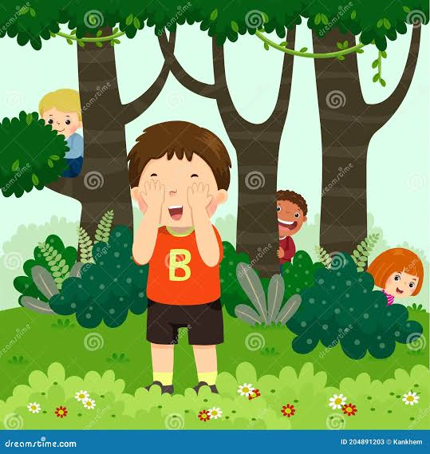

Un campo con árboles, arbustos, rocas y más: escóndete o encuentra a los demás.
⏱️
2 min
Tiempo
2 min
Tiempo

Inicia sesión en Cuenta para guardar tus puntos.
Reglas
- Es un campo con árboles, arbustos, rocas, troncos, pajares y barriles.
- Solo: los 4 bots tienen unos segundos para esconderse; luego tocas los objetos y los encuentras antes de que se acabe el tiempo.
- Cada bot encontrado vale 5 puntos (+5 si los encuentras a todos).
- En línea: primero te escondes tocando un objeto mientras un cazador te busca; después tú eres el cazador y verás «Jugador 2 encontrado» con cada hallazgo.
- Si nadie te encuentra ganas 8 puntos; cada jugador que encuentres como cazador vale 4.